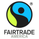
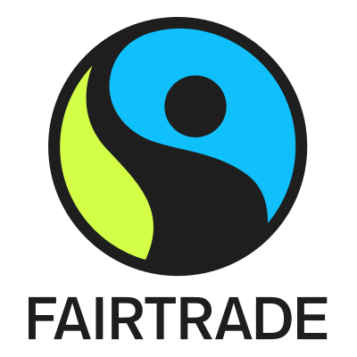

Pages Colour Typography Voice Tensions Motifs Components Logo Fairtrade Fairtrade Farmers and their Stories
The world's trade system exploits farmers. Fairtrade steps in the right direction by supporting sustainable lives for farmers and their families.
https://www.fairtrade.net/Coverage 100/100 pages extracted live (Playwright), 0 failures
medium wait mode · reveal-on-scroll content fader noted
14 colours · 2 families census at 1440 + 360 over 98 distinct URLs
Pages Fairtrade America - the Future is Fair/ · landing Für eine gerechtere Weltwirtschaft | Fairtrade Deutschland/de-de.html · locale-home Max Havelaar France/maxhavelaarfrance-fr.html · locale-home フェアトレード・ジャパン｜Fairtrade Japan｜公式サイト/jp-jp.html · locale-home Fairtrade America - the Future is Fair/us-en.html · landing English/en.html · locale-home English/africa-en.html · locale-home FAIRTRADE Österreich/at-de.html · locale-home Fairtrade Belgium/be-fr.html · locale-home Fairtrade Belgium/be-nl.html · locale-home Fairtrade Canada | Canada's Trusted Fair Trade Certification/ca-en.html · locale-home Fairtrade Canada | La certification de confiance Canadienne/ca-fr.html · locale-home Fairtrade Ibérica España | Un futuro más justo es posible/iberica-es.html · locale-home Fairtrade Ibérica Portugal | Um futuro mais justo é possível/iberica-pt.html · locale-home Fairtrade Ireland/ie-en.html · locale-home Fairtrade Italia | Marchio etico per la sostenibilità e diritti umani/it-it.html · locale-home Fairtrade Korea/kr-ko.html · locale-home English/napp-en.html · locale-home Fairtrade Nederland/nl-nl.html · locale-home Fairtrade Norge/no-no.html · locale-home Fundacja Fairtrade Polska/pl-pl.html · locale-home Fairtrade Sverige/se-sv.html · locale-home Fairtrade Max Havelaar Schweiz/ch-de.html · locale-home Fairtrade Max Havelaar Suisse/ch-fr.html · locale-home Fairtrade Foundation/uk-en.html · locale-home About/us-en/about.html · static News/us-en/news.html · listing Contact/us-en/contact.html · static Bring Fairtrade to your market/mt-en/bring-fairtrade-to-your-market.html · form Aduceți Fairtrade pe piața dumneavoastră/ro-ro/aduceti-fairtrade-pe-piata-dumneavoastra.html · form Prinesite Fairtrade na vaš trg/si-sl/prinesite-fairtrade-na-vas-trg.html · form Why Fairtrade/us-en/why-fairtrade.html · static Fairtrade products/us-en/products.html · listing For Business/us-en/for-business.html · static For Media/us-en/for-media.html · listing Terms of Use/us-en/terms-of-use.html · static Privacy Policy/us-en/privacy-policy.html · static Fairtrade Newsletter/us-en/fairtrade-newsletter.html · form What we do/us-en/why-fairtrade/what-we-do.html · static Why we do it/us-en/why-fairtrade/why-we-do-it.html · listing How we do it/us-en/why-fairtrade/how-we-do-it.html · static Impact/us-en/why-fairtrade/impact.html · static Fairtrade products/us-en/products/all-products.html · listing Benefits of being certified/us-en/for-business/benefits-of-being-certified.html · static Get Certified/us-en/for-business/get-certified.html · static For Partners/us-en/for-business/for-partners.html · static For Retailers/us-en/for-business/for-retailers.html · static Get Involved/us-en/get-involved/get-involved.html · static How to Shop Sustainably/us-en/get-involved/how-to-shop-sustainably.html · static Where to buy/us-en/get-involved/where-to-buy.html · static Activism/us-en/get-involved/activism.html · static Careers/us-en/about/careers.html · static When Communities Lead: The Cooperative Model at Work in Madagascar/us-en/news/when-communities-lead--the-cooperative-model-at-work-in-madagasc.html · static Silence isn’t a strategy: Why “greenshouting” matters for business growth/us-en/news/silence-isn-t-a-strategy--why--greenshouting--matters-for-busine.html · static What is Fairtrade?/us-en/why-fairtrade/what-we-do/what-is-fairtrade.html · static How Fairtrade works/us-en/why-fairtrade/what-we-do/how-fairtrade-works.html · static Key benefits of Fairtrade/us-en/why-fairtrade/what-we-do/key-benefits.html · static Theory of Change/us-en/why-fairtrade/what-we-do/theory-of-change.html · static The Fairtrade Difference/us-en/why-fairtrade/what-we-do/the-fairtrade-difference.html · static Child Protection/us-en/why-fairtrade/why-we-do-it/child-protection.html · static Climate and the environment/us-en/why-fairtrade/why-we-do-it/climate-and-the-environment.html · static Decent Livelihoods/us-en/why-fairtrade/why-we-do-it/decent-livelihoods.html · static Deforestation/us-en/why-fairtrade/why-we-do-it/deforestation.html · static Fairtrade and the Sustainable Development Goals/us-en/why-fairtrade/why-we-do-it/fairtrade-and-the-sustainable-development-goals-.html · static Gender Equality/us-en/why-fairtrade/why-we-do-it/gender-equality.html · static HREDD/us-en/why-fairtrade/why-we-do-it/hredd.html · static Smallholder Farmers/us-en/why-fairtrade/why-we-do-it/smallholder-farmers.html · static Workers Rights/us-en/why-fairtrade/why-we-do-it/workers-rights.html · static How does the label work/us-en/why-fairtrade/how-we-do-it/how-does-the-label-work.html · static How Fairtrade certification works/us-en/why-fairtrade/how-we-do-it/how-fairtrade-certification-works.html · static Fairtrade products and ingredients/us-en/why-fairtrade/how-we-do-it/fairtrade-products-and-ingredients.html · static Assuring integrity in checking compliance/us-en/why-fairtrade/how-we-do-it/assuring-integrity-in-checking-compliance.html · static Traceability in Fairtrade supply chains/us-en/why-fairtrade/how-we-do-it/traceability-in-fairtrade-supply-chains.html · static Fairtrade standards/us-en/why-fairtrade/how-we-do-it/fairtrade-standards.html · static Our projects and programs/us-en/why-fairtrade/how-we-do-it/our-projects-and-programs.html · static Impact stories/us-en/why-fairtrade/impact/impact-stories.html · listing Key figures at a glance/us-en/why-fairtrade/impact/key-figures-at-a-glance.html · static How we measure impact/us-en/why-fairtrade/impact/how-we-measure-impact.html · static Reports & Trends/us-en/why-fairtrade/impact/reports-trends.html · static Bananas/us-en/products/all-products/bananas.html · static Cocoa/us-en/products/all-products/cocoa.html · static Chocolate/us-en/products/all-products/chocolate.html · static Coffee/us-en/products/all-products/coffee.html · static Cotton/us-en/products/all-products/cotton.html · static Herbs and spices/us-en/products/all-products/herbs-spices.html · static Nuts and oils/us-en/products/all-products/nuts-oils.html · static Sugar/us-en/products/all-products/sugar.html · static Wine/us-en/products/all-products/wine.html · static Gold/us-en/products/all-products/gold.html · static Fruits and juices/us-en/products/all-products/fruits-juices.html · static Honey/us-en/products/all-products/honey.html · static Business success stories/us-en/for-business/benefits-of-being-certified/business-success-stories.html · listing Benefits for business/us-en/for-business/benefits-of-being-certified/benefits-for-business.html · static Benefits for producers/us-en/for-business/benefits-of-being-certified/benefits-for-producers.html · static Consumer Trends/us-en/for-business/benefits-of-being-certified/consumer-trends1.html · static The Certification Process/us-en/for-business/get-certified/the-certification-process.html · static Resources & Support/us-en/for-business/get-certified/resources-support.html · static Intro to Fairtrade/us-en/for-business/get-certified/intro-to-fairtrade.html · static Get Started/us-en/for-business/get-certified/get-started.html · static Marketing the Movement | marketing the movement/us-en/for-business/for-partners/communicate-your-commitment.html · static Colour palette Source: _brand-extraction.json § palette (_computed-styles.json aggregate)
#1e1e1etext, heading · w10875
#0fc0fc40background · w711 Typography (No modular scale) Source: _brand-extraction.json § type; site.css
display — Fairtrade Farmers and their Stories
Alegreya Sans, system-ui · 72px · 900 · 1.1 h1 — Fairtrade Farmers and their Stories
Alegreya Sans, system-ui · 64px · 900 · 1.1 h2 — Fairtrade Farmers and their Stories
Alegreya Sans, system-ui · 48px · 900 · 1.1 h3 — Fairtrade Farmers and their Stories
Alegreya Sans, system-ui · 32px · 900 · 1.1 h4 — Fairtrade Farmers and their Stories
Exo 2, system-ui · 20px · 800 · 1.1 body — Fairtrade Farmers and their Stories
Exo 2, system-ui · 18px · 400 · 1.6 button — Fairtrade Farmers and their Stories
Exo 2, system-ui · 18px · 700 · 1 The world's trade system exploits farmers. Fairtrade steps in the right direction by supporting sustainable lives for farmers and their families.
Voice Hero
Lede
First paragraph
US • EN Open or close the locale selecto ×148 Instagram ×100 LinkedIn ×99 Back to Homepage ×83 Search Open the search box ×82 Open Open the meta menu ×82 Get Involved ×81 Products ×80
984 distinct headings
1198 distinct CTA labels
Tensions Type scale is ad-hoc (18px → 24px → 32px → 48px → 64px → 72px, no consistent ratio).
59% of images carry empty alt text (361/614).
CTA voice is fragmented: "Learn More" ×11, "Learn more" ×14, "Find out more" ×12, "Read more" ×19, "Read More" ×3.
Only one logo variant captured per national site (one logo per national site (21 distinct logo files across the 100 pages); international: stardust/current/assets/logo-international.svg).
No CSS design tokens beyond --topbar-height: colours are hard-coded per component in site.css; the migration introduces a token layer.
Motifs 12px
100%
100px
16px
4px
120px
shadow ×502
Waves, blobs and the content fader: SVG wave dividers, separate mobile/tablet/desktop shapes (.Wave--mobile/--tablet/--desktop) · organic blob shapes behind number facts (.Bubble color-*) · components fade in on intersection ([data-module~=content-fader] > * opacity → 1 with .is-visible)
Components page-lead — 87 pagesnumberfactteaser — 44 pagestextimage — 74 pagesrichtextsection — 85 pagesteasergrid — 26 pagesctasection — 35 pagesaccordion — 39 pagespageherocarousel — 19 pagesiframe-experience-fragment — 2 pageshighlightedTeaserCarousel — 3 pagesvideo — 8 pagesimagegridselect — 5 pagesformbuilder — 3 pagessingleimage — 18 pagesiFrame — 7 pagesSystem components header — .Topbar, every page, per-locale logo + navigation footer — .Footer (night sky), every page Logo & favicon 

Source .Topbar--logo img File PNG 80×80 (America), SVG (International), SVG favicon Variants captured 2 Variants not captured 19 other national logos (linked from each locale header) Spacing & shape Base unit 8px · scale 16 / 24 / 32 / 40 · radii 12px · 100% · 100px · 16px · 4px · 120px
Read: _brand-extraction.json, _computed-styles.json, _crawl-log.json, pages/*.json, assets/css/site.css. What's next: replica preserve-direction (same design kept). Badges: none.